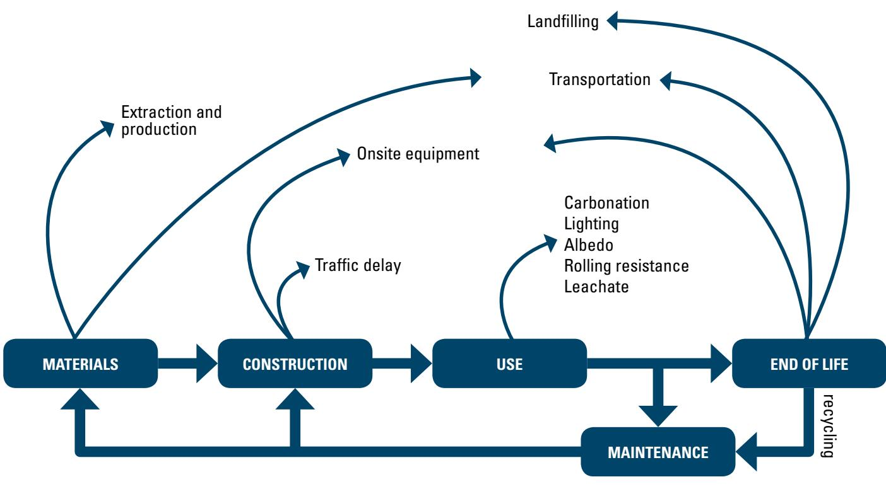

Preservation Strategies
Preservation strategies are systematic, proactive maintenance approaches applied to existing pavements before significant deterioration occurs, aiming to extend functional service life without adding major structural capacity. These strategies function by treating localized distress and preventing new damage through interventions that improve structural support, load transfer, surface smoothness, and resistance to water infiltration while enhancing safety features such as friction [1]. Implementation involves a sequence of low-volume techniques, including crack sealing, joint resealing, diamond grinding, partial-depth repairs, and surface sealants, which are selected based on condition monitoring and applied to sustain ride quality and durability [1] [2]. The overarching goal is to maintain the pavement in a state of good repair by balancing initial investments against future needs, thereby minimizing lifecycle costs and environmental impacts while ensuring economic viability and safety throughout the asset’s service life [2] [3].
Sources (4)
Key findings
- Demonstrated that preserving smoothness through surface renewal techniques yields significant sustainability gains for high-traffic concrete pavements, whereas such approaches offer little environmental justification for low-volume pavements [2].
- Established that effective preservation requires applying the correct treatment to the appropriate pavement at the optimal moment based on systematic data analysis of structural condition, traffic loads, and climate [1].
- Observed that multiple preservation treatments must follow a logical construction sequence to maintain the effectiveness of each individual step [1].
- Reported that cost-effectiveness analysis is essential but may be overridden by budget limits, network priorities, environmental concerns, or stakeholder preferences when selecting preservation options [1].
Concrete Pavement Preservation & Sustainability
Concrete pavement preservation involves systematic, proactive maintenance actions applied throughout a structure’s service life to extend its functional lifespan by addressing localized distress before significant deterioration occurs [1]. These strategies aim to sustain structural capacity, ride quality, and durability while minimizing environmental impacts and lifecycle costs through interventions such as surface sealers, joint management, and partial- or full-depth repairs [2] [3]. Sustainability in this context is achieved by optimizing material usage, incorporating supplementary cementitious materials or recycled content, and ensuring rigorous quality control to prevent premature failures that would negate long-term performance gains [2].
The following figure illustrates the general applicability of these preservation strategies in relation to broader maintenance activities.
 General applicability of pavement preservation, rehabilitation, and reconstruction activities over time. [1]
General applicability of pavement preservation, rehabilitation, and reconstruction activities over time. [1]
The figure displays a curve plotting pavement condition against time to illustrate the relative timing of different maintenance interventions. It visually defines the “Pavement Preservation” phase as occurring during the early years when the pavement is still in good to very good condition, before significant deterioration occurs.
Research problem — Current preservation guidance is heavily skewed toward material production, design, and construction, leaving the use, maintenance, rehabilitation, and end-of-life phases largely unaddressed despite their critical role in lifecycle sustainability [2]. Agencies often fail to intervene early due to insufficient pavement-management data and a lack of systematic methods for evaluating condition and selecting treatments, leading to reactive management that results in costly rehabilitation and reduced service life [1]. Joint deterioration remains a central preservation challenge, particularly when exacerbated by winter maintenance requirements and the need to manage deicing chemicals while ensuring pavement maturity before exposure to traffic and freeze-thaw cycles [3]. The airport pavement industry faces significant delivery obstacles including workforce shortages, limited material availability, and tightening regulations that hinder the execution of resilience-oriented preservation projects needed to withstand climate-related stresses [4].
The following figure illustrates the pavement life-cycle phases that are often overlooked in current preservation practices.

Pavement life-cycle phases diagram showing the progression from materials to end of life. [2]The figure illustrates a cyclical process flowchart that divides pavement management into four primary stages: Materials, Construction, Use, and End of Life. It depicts the ‘Use’ phase as a central component connected to ‘Maintenance’, which loops back to earlier phases, while also identifying specific environmental factors such as carbonation, lighting, and albedo that occur during service.
State of the art — Current practice employs a proactive, data-driven workflow that integrates mechanistic-empirical design tools with Pavement Management Systems to select treatments based on structural condition, traffic forecasts, and life-cycle cost-effectiveness [1]. The field has expanded its decision criteria beyond economics to incorporate sustainability factors, utilizing frameworks such as FHWA’s RealCost and LCA tools alongside rating systems like INVEST and Greenroads to evaluate environmental and social impacts [1] [2]. Material-level strategies increasingly focus on reducing Portland cement content through lower-cementitious mixes and supplementary cementitious materials, while wisely incorporating recycled concrete waste materials to minimize environmental impact without compromising performance [2].
Findings from the reports
- Found that applying the correct treatment to the appropriate pavement at the optimal moment is essential for effective concrete-pavement preservation [1].
- Demonstrated that systematic collection and analysis of pavement-management data provides the performance indicators needed to define a preservation window and trigger specific treatments [1].
- Observed that multiple treatments must follow a logical construction sequence, such as performing crack repairs before diamond grinding and joint resealing last, to preserve the effectiveness of each step [1].
- Reported that cost-effectiveness analysis cannot override budget limits, network priorities, environmental concerns, or stakeholder preferences when selecting preservation options [1].
- Measured treatment performance by its service life, finding that it should ideally match the remaining structural life of the slab to ensure preservation extends pavement longevity [1].
- Showed that for high-traffic concrete pavements, designing for and preserving smoothness throughout service life yields the greatest sustainability gains [2].
- Revealed that the environmental benefits of keeping high-traffic pavement in a smooth condition far outweigh the negative impacts associated with intervening maintenance or rehabilitation [2].
- Identified that low-volume pavements receive little advantage from preserving smoothness, so preservation decisions for these assets should prioritize other attributes such as longevity and aesthetics [2].
Novelty & rigor — The approach is novel for shifting concrete pavement preservation from reactive fixes to a proactive, network-wide planning process that integrates mechanistic-empirical design tools with continuous data-driven feedback loops [1]. Reproducibility is ensured through a systematic workflow that mandates comprehensive data assembly, time-series performance modeling using established guidelines, and strict documentation of all analytical steps and sequencing logic [1].
Across the reviewed reports, concrete pavement preservation strategies converge on the necessity of aligning treatment selection with specific traffic volumes and performance goals to maximize sustainability. While high-traffic pavements achieve significant environmental benefits by maintaining smoothness through techniques like diamond grinding, low-volume pavements derive little justification for this approach, shifting the preservation focus toward longevity and repairability instead. [1] [2]
Implications — Agencies must integrate preservation as a proactive, data-driven component of asset management to prevent costly rehabilitation and maximize lifecycle sustainability benefits [1]. Designers should tailor preservation strategies to traffic volume, prioritizing surface smoothness on high-traffic corridors for emission reductions while focusing on service life extension in low-volume settings [2]. Material selection and construction practices must prioritize locally sourced sustainable aggregates and durable configurations to minimize transport emissions and justify higher upfront costs through long-term societal and economic gains [2].
Limitations — Preservation strategies are not universally applicable and require sound underlying pavement structure, as heavily deteriorated sections fall outside their scope [1]. Decisions based on economic metrics may be flawed if they ignore budget constraints, network priorities, or environmental considerations that can supersede benefit-cost ratios [1]. The environmental benefits of smoothness are highly dependent on traffic volume and may not justify the approach for low-volume streets due to competing factors like runoff and aesthetics [2]. Fuel-saving effects from structural responsiveness remain unproven, requiring further validation of models before they can reliably inform design decisions [2]. Sustainability gains from recycled materials or enhanced construction practices can be negated by transport emissions or increased upfront costs and congestion during implementation [2].
Evidence: 4 reports (2 primary)
Related concepts
In this hierarchy
- Parent: Pavement Management
- Sibling: Concrete Production
- Sibling: Design Considerations
- Sibling: Design Methodologies
- Sibling: Pavement Design
- Sibling: Pavement Evaluation
Related by shared evidence
- Aggregate Management — shares 4 reports
- Cement Chemistry — shares 4 reports
- Cementitious Materials — shares 4 reports
- Concrete Mixture Design — shares 4 reports
- Concrete Production — shares 4 reports
- Concrete Testing — shares 4 reports
- Cracking Mitigation — shares 4 reports
- Joint Maintenance — shares 4 reports
Similar topics
- Pavement Management
- Overlay Technology
- Design Methodologies
- Pavement Management
- Pavement Evaluation
- Construction Insights
- Pavement Design
- Pavement Smoothness
Source coverage
| Source | Concrete Pavement Preservation & Sustainability |
|---|---|
| [1] | ✓ |
| [2] | ✓ |
| [3] | ✓ |
| [4] | ✓ |
References
- Concrete Pavement Preservation Guide (Third Edition) (2022)
- Integrated Materials and Construction Practices for Concrete Pavement: A STATE-OF-THE-PRACTICE MANUAL (2019)
- Guide to the Prevention and Restoration of Early Joint Deterioration inConcrete Pavements (2016)
- Best Practices Manual: Quality Control and Quality Acceptance of Concrete Airport Pavement (2025)
Feedback on this page